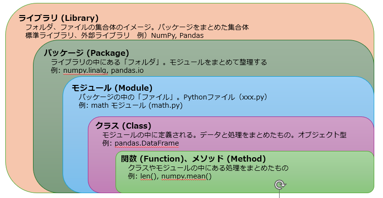
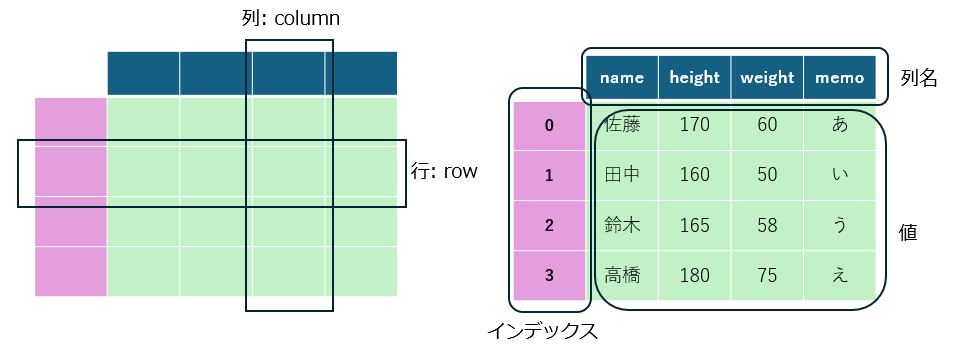
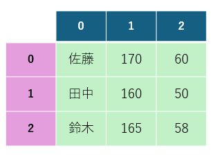
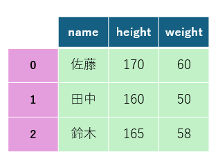
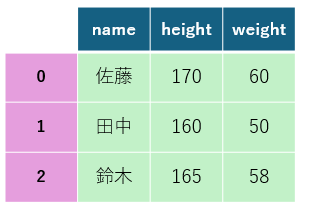
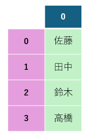
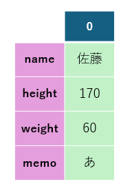
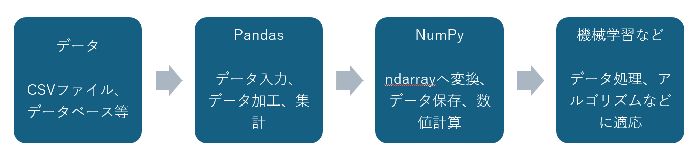

第1回 オリエンテーション¶
この授業は「プログラミング基礎A/コンピューティング応用E」の内容を踏まえたプログラミング応用講座です。
🎯 到達目標¶
Pythonの基本部分のおさらい
Pythonの代表的なライブラリを理解する
練習問題のGoogle Colab起動¶

上記の「Open In Colab」をクリックして、Google Colabを起動させてください
[ファイル] → [ドライブにコピーを保存] を選択して、Googleドライブにコピーを保存してください
保存が成功すると，Googleドライブの「マイドライブ」 →「Colab Notebooks」にコピーしたファイルが保存されます。
GoogleドライブにコピーしたGoogle ColabのNotebooksを開いてください
開いたGoogle ColabのNotebooksで作業をしてください
Pythonの特徴¶
1. シンプルで読みやすい文法¶
スタイルの統一をして、誰が書いたコードでも読みやすく理解しやすいようにする思想の言語
他の言語に比べて文法がシンプルで、コードの記述量が少ないのが特徴
インデント（字下げ）によってコードのブロックを表現するため、視覚的に構造が分かりやすく、誰が書いても似たようなコードになりやすい
プログラミング初心者でも学びやすい言語と言われている
2. 豊富なライブラリとフレームワーク¶
ライブラリが豊富で、広く使われているフレームワークがある
AI（人工知能）開発、データ分析、Web開発、自動化など、様々な分野で使える便利なライブラリやフレームワークが豊富に提供されている
ゼロからコードを書く必要がなく、効率的に開発を進めること可能
AIや機械学習の分野では、TensorFlow、PyTorch、scikit-learnといった強力なライブラリが充実しており、この分野でPythonが広く使われる理由となっている
3. 汎用性が高い¶
幅広い分野で活用されている
Webアプリケーション開発（YouTubeやInstagramなどがPythonで作られている)
データ分析、機械学習、AI開発、科学技術計算
業務の自動化（スクレイピング、ファイルの整理など）に使われる
API連携が可能
学術研究での利用
多くの学術論文や研究プロジェクトで使われており、最新の技術・アルゴリズムを利用しやすい
4. 活発なコミュニティ¶
コミュニティが充実
世界中にユーザーがおり、情報やチュートリアルが豊富にある
困ったことがあっても、インターネットで検索すれば多くの情報を見つけることが可能
Pythonの不得意分野¶
実行速度が遅い
インタプリタ言語であるため、実行速度はC言語やJavaといったコンパイラ言語に比べて遅い
動的型付け言語であるため、実行時に型が決定され逐次処理するので処理が重くなる
スマホアプリ・ゲーム開発
リアルタイム処理や高速な処理が求められる ゲーム開発、金融システムなどには不向き
モバイルアプリ開発に特化した言語ではない
スマホアプリの開発には他に適した言語やゲームエンジンがあるため、相対的にPythonはあまり使われない傾向にある
高速処理を必要とするシステム
単に「Pythonのコードをそのまま書く」だけでは高速処理に適さない
標準のPythonでは、 GILによりスレッドセーフティを確保し、メモリ管理を簡素化するために複数のスレッドを同時に実行することができない。これにより、CPUをフル活用した並列処理が難しくなる
※ インタプリタ言語：プログラミング言語の命令を1つずつ機械語に変換しながら実行する方式
※ GIL (Global Interpreter Lock): Pythonのインタプリタが一度に1つのスレッドしか実行できないようにするもの
Pythonの活用例¶
Pythonは計算や機械学習のライブラリが優れていることから、人工知能やデータサイエンスの分野で使われてことが多いことは知られている。 地理空間情報やその他についても広く使われている。
AI、人工知能、機械学習での活用
データサイエンス
Web上の情報収集（Webスクレイピング）
Web3、ブロックチェーンの開発
Webサイト、Webアプリケーション開発
画像処理
業務効率化・自動化
地理空間情報での活用
Pythonの学習のコツ¶
いきなり、全てを完璧に理解しようとしない
少しずつ、使いながら覚えていく
エラーを体験し、解決する力を養う
プログラミングにおいて、エラーは避けて通れない道。この経験を積むことで、エラーメッセージを読み解く力、問題の原因を特定する力、そしてそれを解決する力が自然と身についていく
調べる方法を知る
Webなどの検索で自分なりの解決方法を確立する
AI(ChatGPTなど）で「わからない用語を聞いてみる」「問題を出しもらう」「ヒントを出してもらう」「エラーメッセージの意味と原因を聞いてみる」
公式サイトなどのマニュアルやドキュメント(チュートリアル)を読む
例）Python公式 https://docs.python.org/ja/3/
「写経」する
「写経」とは、お手本となるプログラムのコードをそのまま書き写す学習方法である。 一見すると地味で退屈に思えるかもしれないが、実はプログラミングの基礎を身につける上で非常に効果的な方法である
Vibe Coding（バイブ・コーディング）を活用
AIを活用する
Vibe Codingで、コードのひな型やヒントを作成してもらい、それを元に学習をする
※ バイブコーディング（Vibe Coding）：AIに自然言語で指示を出すことでコード生成を行い、対話と感覚でスピーディにプログラミングをする手法
なぜプログラミングを学ぶのか？¶
AIでコードが生成できるのに、なぜプログラミングを学ぶのか？
1. AIの出力を評価できるのは、コードが読む必要がある¶
AIが生成するコードは、一見動いているように見えても、非効率だったり、倫理やセキュリティ上の問題があったり、そもそも意図と違う処理をしていたりすることがある。
プログラミングの基礎がないと、「動いた/動かない」でしか判断できず、なぜ動いているのか、どこが危ういのかを見抜けない。
AIは優秀な「叩き台生成機」であって、最終判断者は人間である必要がある。
2. 「何を作りたいか」を言語化する力そのものがプログラミング的思考¶
AIに指示を出す際も、結局は「入力→処理→出力」のようにプログラミングの構造と処理手順を理解して分解して伝える必要がある。 この分解力(いわゆるアルゴリズム的思考)は、プログラミングを実際に書いて、自身でプログラムを書いて、エラーに向き合って、修正するというプロセスを経験して初めて身につくものである。 プロンプトの指示も内容を理解して指示をしないと、問題を切り分ける訓練を飛ばすと限界が来る。
3. AIの得意・不得意を体感で知っている人ほど、AIをうまく使える¶
自分でコードを書いた経験があると、「このタスクはAIに任せて大丈夫」「ここは自分で確認すべき」という勘所が働く。 逆に基礎がないと、AIの間違いに気づけず、間違ったコードをそのまま本番で使ってしまうリスクがある。
4. コードの妥当性の判断は理解が前提になる¶
AIが生成したコードの妥当性(このライブラリの使い方はここで適切か等)を判断できない
5. AIガバナンス¶
AIは「実装」を大きく支援できるが、判断・責任・倫理は社会的な価値観や文脈に基づくため、人間が担う必要がある
判断（Judgment）：AIの提案を評価し、最終決定を行う。
AIは選択肢を提示したり、予測したりすることは得意ですが、最終的に何を選ぶかを決めるのは人間である
責任（Responsibility）：システムの結果や影響に対して説明責任を果たす。
AIが提案した内容であっても、社会や利用者に対する責任は開発者や組織にある。
倫理（Ethics）：社会や利用者への影響を考慮し、公正で信頼できるAIの活用を実現する。
AIには「善悪」を自ら判断する価値観はありません。そのため、社会的に望ましい形でAIを利用するための倫理的な配慮が不可欠である。
「AIは強力なアシスタントだが、運転免許を持たずに自動運転車の判断を信頼しきるのは危険」というような比喩も伝わりやすいかもしれないです
Pythonの代表的な外部ライブラリ¶
データ処理¶
NumPy (https://numpy.org/)
科学技術計算や機械学習などにおいて代表的なライブラリである。
独自のデータ構造「ndarray」
多次元配列を効率的に扱えるため、ベクトルや行列の演算が必要な分野で多用されている
数値計算用のエンジンである
Pandas (https://pandas.pydata.org/)
データ解析を支援する機能を持つライブラリである
データ操作のための高速で効率的なデータフレーム (DataFrame、Seriesなど) オブジェクトをもつ
データの加工処理をする
グラフ描画・画像解析・機械学習¶
Matplotlib (https://matplotlib.org/)
グラフ描画ライブラリ
Scikit-Learn (https://scikit-learn.org/)
オープンソースの機械学習ライブラリで、他のライブラリとの連携を行いやすいのが特徴である
OpenCV (https://opencv.org/)
画像解析に用いられるライブラリです。
Webフレームワーク¶
Django (https://www.djangoproject.com/)
Pythonで実装されたのWebフレームワークで、認証や管理画面など豊富な機能を標準搭載し、高速かつ安全に開発ができる
Flask (https://flask.palletsprojects.com/en/stable/)
Pythonで簡単に軽量Webフレームワークで、必要最小限の機能を提供し、拡張性が高く柔軟にWebアプリを構築できる
FastAPI (https://fastapi.tiangolo.com/)
Python製の高速Webフレームワークで、型ヒントを活用して自動ドキュメント生成や高い開発効率を実現し、非同期処理に強いのが特徴で、Web APIやマイクロサービスの開発に向いている
Streamlit (https://streamlit.io/)
データ分析や機械学習のスクリプトを、わずか数行のPythonコードでインタラクティブなWebアプリケーションに変換できるオープンソースのライブラリ
地理空間情報とPython¶
「地理空間情報（GISデータ）」ではPythonで多くの専用ライブラリやツールが整備されている
地理空間情報での活用
地理空間情報とは、位置情報とそれに関連付けられた情報を指す。
例えば、ある場所の緯度経度の座標とその場所の地名、人口、建物などの情報が地理空間情報として扱われる。
Pythonは地理空間情報の「解析＋可視化＋機械学習応用」を一気通貫でできる強力な言語です。
地理空間情報とGIS
地理空間情報は、GIS（地理情報システム）と呼ばれるシステムで活用されます。GISは、地理空間情報を収集、管理、分析、表示するためのシステムで、地図の作成や空間分析、地理空間データの管理など、様々な機能を提供します。
地理空間情報を扱う代表的なライブラリ¶
GeoPandas (https://geopandas.org/)
Pandasを地理空間データ向けに拡張したライブラリ
地理空間データフレームを扱うためのライブラリで、地図データの読み込み、距離や位置の計算、地図の作成と可視化などが可能
Shapely (https://shapely.readthedocs.io/en/stable/)
ジオメトリ（点、線、多角形など）を扱うためのライブラリで、幾何学的なオブジェクトの作成、操作、解析に利用される
Pyproj (pyproj4.github.io/pyproj)
地図投影変換を行うためのライブラリ。
ラスターデータを扱うためのライブラリ
Fiona (https://fiona.readthedocs.io/en/stable/)
GIS形式のファイルなどのデータの読み書きに特化したシンプルなライブラリ
Folium (https://python-visualization.github.io/folium/)
Pythonでインタラクティブな地図を作成できるライブラリ
leaflet.jsというJavascriptでマップデータを使用することのできるライブラリをPythonパッケージ化しにしたもの
Cartopy (https://scitools.org.uk/cartopy/)
地図を描画したりやその他の地理空間データ解析を行うために、地理空間データ処理用のPythonパッケージ
気象データの可視化に強い。
leafmap (https://leafmap.org/)
Google Colab/Jupyter notebook環境で最小限のコーディングでインタラクティブなマッピングと地理空間分析を行うためのPythonパッケージ
地理空間情報の活用例¶
地理空間情報は、位置情報とそれに関連付けられた情報を活用することで、様々な分野で役立つ情報を得ることができる。
地図作成
地図データを作成・編集し、Webサイトやアプリケーションで公開することが可能
位置情報分析
GPSデータや位置情報サービスから得られたデータを分析し、人流の把握や混雑状況の予測などに活用できる
環境分野（例: 衛星画像を使った森林変化検出）
衛星画像やセンサーデータを分析し、森林破壊や大気汚染などの環境問題を把握することができる
都市計画や交通データ分析（例: 人口分布と鉄道駅の関係解析）
都市の人口分布や交通状況などの情報を分析し、都市計画や地域開発に役立てることができる
防災分野（例: 洪水浸水予測マップ、避難経路分析）
地図データとハザード情報を組み合わせ、避難経路の計画や災害リスクの評価に活用できる
ビジネス分野（例: 商圏分析、位置情報マーケティング）¶
ビジネスにおける地理空間情報の特徴は 「位置」という切り口を加えることでデータの価値を飛躍的に高め、戦略や業務改善に直結できる。
不動産、物流、小売、金融、都市開発など幅広い業界で活用可能である。
例えば、ある地域の人口密度を計算し、地図上に可視化することで、人口が密集している地域や過疎地域を把握することができます。また、複数の地域の人口密度を比較することで、地域間の人口分布の違いを分析することも可能
位置情報に基づく意思決定
店舗の出店場所選定（人口動態・交通アクセス・競合位置などを考慮）
配送ルート最適化や物流効率化（コスト削減、CO₂排出削減）
顧客理解とマーケティング
商圏分析やヒートマップによる顧客分布の把握
スマホ位置情報やGPSデータを用いたリアルタイム広告配信（ジオターゲティング）
リスク管理と予測
災害リスクマップ（地震・洪水・土砂崩れ）を活用した保険料設定や不動産評価
交通量・気象データを使った需要予測（例: タクシー配車、商品需要）
Pythonのおさらい¶
Python標準の4つの基本的なデータ構造¶
Python標準では、List（リスト）・Tuple（タプル）・Set（セット）・Dict（辞書）という4つの基本的なデータ構造がある
| 項⽬ | List | Tuple | Set | Dict（辞書） |
|---|---|---|---|---|
| 読み方 | リスト | タプル | セット | ディクト（辞書） |
| 中身の変更 | できる | できない | できる | 値の変更OK(key, Value) |
| 順番の保証 | ある（順番通り） | ある（順番通り） | なし（順不同） | ある（Python3.7以降） |
| 重複の可否 | 重複OK | 重複OK | 重複NG | Keyは重複NG |
| 使いどころ | 順序が大事で変更もしたいとき | 値を固定したいとき、処理速度を上げたいとき | 重複を除きたいとき | KeyとValueのペアを扱いたいとき |
※ Dict（辞書） : Python 3.7 以降: 挿入順が保持されることが、言語の仕様として保証されている。Python 3.6以前は 内部の実装により挿入順が保持されていが、順番は保証されてない
NumPy・Pandas・Python標準の違い¶
NumPy・Pandas・Python標準(リスト、タプル等)の使い分け
| 項⽬ | NumPy | Pandas | Python標準 |
|---|---|---|---|
| データ構造 | 多次元配列（ndarray） | データフレーム（表形式）、シ リーズ（1次元） | 可変⻑のリスト |
| ⽤途 | 数値データ・数値計算・⾏列計算 | データ分析・統計処理 | 汎⽤的なデータ保持 |
| 速度 | ⾼速（C言語での実装、ベクトル化演算可能） | NumPyに比べると遅め | 遅い（逐次処理） |
| 機能 | 数学演算、線形代数、統計 | データ集計、⽋損値処理、ラベ ル付き操作 | 基本的な追加・削除・⾛査 |
| 利便性 | 数値処理に特化、ブロードキャスト可 | ⾏・列ラベル、SQLライクな操作性 | 汎⽤的だが数値処理に不向き |
| 代表的な使い道 | ⾏列計算、画像処理、科学技術計算 | データ解析、表形式データの処理 | 簡単なデータ管理、順序付 き要素の保持 |
NumPy → 数値計算・⾏列演算が得意、格納される要素はすべて同じデータ型（数値型など）で、基本的には多次元配列の数値データ
Pandas → 表形式データの処理や分析が得意
Python標準） → 汎⽤的だが数値処理には⾮効率
つまり、「Python標準」→ 基礎、「NumPy」→ 数値計算のエンジン、「Pandas」→ データ分析ツールという関係
※ ブロードキャスト: 形が同じ配列同士でなければ足し算や掛け算などの計算ができない。しかし、ブロードキャスト機能が働くと、サイズの小さい方の配列が内部で仮想的に引き伸ばされ、大きい方の配列と形が揃えられる
※ SQLライク: SQL（データベース言語）のデータ操作（抽出、集計、結合など）と似た感覚・構文でデータフレーム（DataFrame）を扱える機能や特徴のこと
ライブラリ、パッケージの関係¶
ライブラリ、パッケージ、モジュール、クラス、関数、メソッドの関係
{kind=link}

関数 → 単独でも呼び出せる処理
メソッド → クラスの中で定義された関数．クラスに属している関数
命名規則¶
| 対象 | ルール (PEP8) | 例 |
|---|---|---|
| パッケージ | 全小文字 (アンダースコア非推奨) | tqdm, requests ... |
| モジュール | 全小文字 (アンダースコア可) | sys, os,... |
| クラス | 最初大文字 + 大文字区切り | MyFavoriteClass |
| 例外 | 最初大文字 + 大文字区切り | MyFuckingError |
| メソッド | 全小文字 + アンダースコア区切り | my_favorite_method |
| 関数 | 全小文字 + アンダースコア区切り | my_favorite_variable |
| 変数 | 全小文字 + アンダースコア区切り | my_favorite_instance |
| 定数 | 全大文字 + アンダースコア区切り | MY_FAVORITE_CONST |
| ファイル名 | モジュール名+.py (アンダースコア可) | myhappymodule.py |
| 内部変数 | アンダースコアで開始 | _my_happy_variable |
| 内部メソッド | アンダースコアで開始 | _my_happy_method |
内部変数と内部メソッド：クラス内でのみ使用する変数とメソッドのこと
PEP8: https://pep8-ja.readthedocs.io/ja/latest/
Numpy（Numerical Python）¶
基本的には多次元配列の数値型データ
格納される複数要素はすべて同じデータ型やサイズで構成
リスト型のように見えまるが、データ構造はndarray (np.ndarray)
各次元の位置は整数値のほかリストやスライスなど様々な形式で指定でき、任意の部分配列を選択できる。
1次元配列 [1,2,3,]
2次元配列 [[1,2,3],
[4,5,6]]
import numpy as np # NumPyモジュールをインポートする
#ndarrayインスタンスを生成する
a = np.array([1, 2, 3]) # 1次元配列
b = np.array([[1, 2, 3], [4, 5, 6]]) # 2次元配列
スライス¶
リスト、文字列、タプル、バイト列などの一部分を切り取る仕組みを、スライスと呼ぶ
スライスは、[開始:終了:ステップ]という書式で指定する
開始 (start): 開始するインデックス。0で始まる。省略するとシーケンスの先頭からになる
終了 (stop): 終了するインデックス。終了インデックス自身は含まれない（未満の値）
ステップ (step): どのくらいの間隔で要素を取り出すか。省略すると、1つずつとなる
# インデックス2から5までの要素を取得
numbers = [0, 1, 2, 3, 4, 5, 6, 7, 8, 9]
# 2, 3, 4 の3つが取れる (インデックス5の要素は含まれない)
print(numbers[2:5]) # 出力： [2, 3, 4]
# インデックス0から3までの要素を取得
print( numbers[0:4]） # 出力： [0, 1, 2, 3]
スライス (省略記法)¶
開始と終了のインデックスは、省略することができる
[ :終了] 先頭から指定したインデックスの直前まで
[開始: ] 指定したインデックスから最後まで
[ : ] 全ての要素 (コピーを作成する際によく使われる)
# 先頭からインデックス4の直前まで (0, 1, 2, 3)
print(numbers[:4]) # 出力: [0, 1, 2, 3]
# インデックス5から最後まで (5, 6, 7, 8, 9)
print(numbers[5:] ) # 出力: [5, 6, 7, 8, 9]
# リスト全体
print(numbers[:] ) # 出力: [0, 1, 2, 3, 4, 5, 6, 7, 8, 9]
スライス (マイナスのインデックス)¶
マイナスのインデックスが使用できる
末尾から数えることを意味する
-1: 最後の要素
-2: 最後から2番目の要素
# 最後から3つの要素を取得
print(numbers[-3:] ) # 出力: [7, 8, 9]
# 最初の5つの要素を除いた残り (終了は未満)
print(numbers[5:-1] ) # 出力: [5, 6, 7, 8]
スライス (ステップ)¶
ステップを指定することで、要素を飛び飛びで取り出すことが可能
# 2つおきに要素を取得
print(numbers[::2]) # 出力: [0, 2, 4, 6, 8]
# インデックス1から8まで、2つおきに要素を取得
print(numbers[1:9:2]) # 出力: [1, 3, 5, 7]
応用
ステップに -1 を指定すると、シーケンスを逆順にすることができる
# リストを逆順にする
print(numbers[::-1]) # 出力: [9, 8, 7, 6, 5, 4, 3, 2, 1, 0]
# 文字列でも同様
text = "Python"
print(text[::-1] ) # 出力: "nohtyP"
Pandas¶
Pandas – DataFrame形式¶
Excelのような二次元の表形式のデータ
列名一覧（columns）でデータを取り出したりできる
{kind=link}

Pandas – DataFrameの作成¶
pandas.DataFrameに2重リストを渡すとDataFrameオブジェクトを作成される
{kind=link}

import pandas as pd
"""メインの処理"""
df = pd.DataFrame([['佐藤', 170, 60], ['田中', 160, 50], ['鈴木', 165, 58]]
Pandas – DataFrameの作成¶
列に名前を付ける
{kind=link}

import pandas as pd
df = pd.DataFrame([['佐藤', 170, 60], ['田中', 160, 50], ['鈴木', 165, 58]])
df.columns = ['name', 'height', 'weight']
Pandas – DataFrameの作成¶
列に名前を付ける
作成時に名前をつける
{kind=link}

import pandas as pd
df = pd.DataFrame([['佐藤', 170, 60], ['田中', 160, 50], ['鈴木', 165, 58]],
columns=['name', 'height', 'weight', ])
Pandas – Series形式¶
1次元のデータ
{kind=link}

import pandas as pd
series = pd.Series(['佐藤', '田中', '鈴木', '田中'])
{kind=link}

import pandas as pd
series = pd. Series(['佐藤', 170, 60, 'あ'], index=['name', 'height', 'weight’, ‘memo’])
DataFrameやSeriesから値を取得・取得する¶
"at" 、"iat" 、"loc" 、"iloc"を利用してDataFrame および Series から値を取得・設定する
プロパティのため () のような丸括弧ではなく、[] のような角括弧を利用する。
[行(row)，列(columns)]で指定する。行番号・列番号は0で始まる
スライス[start:stop:step]でも指定可能
| プロパティ | 位置の指定方法 | 取得できるデータ |
|---|---|---|
| at | 行名（行ラベル） 列名（列ラベル） |
単一の値 例) df.at[“0", “height"] |
| iat | 行番号 列番号 |
単一の値 例）df.iat[0, 0] |
| loc | 行名（行ラベル） 列名（列ラベル） |
単一の値や複数の値 （SeriesまたはDataFrame） 例）df.loc[: , “height"] |
| iloc | 行番号 列番号 |
単一の値や複数の値 （SeriesまたはDataFrame） 例） df.iloc[0, :] |
※ iで始らない：ラベル
※ iで始まる：番号
データ分析での流れの例¶
例えば、機械学習をする場合、元データをPandasのDataFrameに落とし込んでデータの前処理と加工をする
DataFrame内の必要なデータをNumPyのndarrayに変換し、機械学習の演算や高度なアルゴリズムによる処理を行うというの流れが代表的である。
実際に触るのが多い型は、DataFrame型が多い
データ分析では作業時間の大部分を前処理に割くともいわれている。前処理にその後の作業と結果が異なる
{kind=link}

Webフレームワークの違い¶
| 項目 | Django | Flask | FastAPI | Streamlit |
|---|---|---|---|---|
| 特徴 | 高機能・フルスタック型 | 軽量・シンプル | 高速・型ヒント活用 | データアプリ特化・超簡易UI構築 |
| 開発スタイル | 「全部入り」認証・管理画面・ORMなど標準搭載 | 必要な機能を拡張で追加 | 型アノテーション中心で自動ドキュメント生成 | Pythonスクリプトを書くだけでUIが自動生成 |
| 速度 | 中程度 | 軽量で比較的速い | 非同期処理対応で非常に速い | 中程度（データ処理次第、再実行方式） |
| 学習コスト | やや高い（機能が多い） | 低い（シンプル） | 中程度（型ヒントと非同期処理の理解が必要） | 非常に低い（HTML/CSS/JS不要） |
| 利用例 | 大規模Webアプリ、CMS、SNS（例: Instagram） | 小規模Webアプリ、プロトタイプ | APIサーバ、マイクロサービス、AIサービスのバックエンド | データ可視化ダッシュボード、機械学習デモ、社内ツール |
| 強み | オールインワンで堅牢 | 自由度が高く柔軟 | 高速・自動APIドキュメント生成・非同期処理 | 圧倒的な開発スピード、データ分析者向け |
| 弱み | 重くなりがち | 自由度は低め | 伝統的なWebアプリ機能は少ない | カスタマイズ性が低く大規模開発には不向き |
Django → 大規模・堅牢なWebサービス向け
Flask → 小規模・柔軟なプロトタイプや実験向け
FastAPI → 高速なAPI開発やマイクロサービス向け
Streamlit → データ分析結果やモデルを素早くアプリ化したい場合向け
※ ORM(Object-Relational Mapping)は、プログラム内のオブジェクト(クラスのインスタンス)とデータベースのテーブルを対応づけて、SQLを直接書かなくてもデータベース操作ができるようにする仕組み
📝 練習問題（5問）¶
知識を定着させるための確認問題です。答えは折りたたまれています。 まずは自分で考えてから、クリックして解説を読んでみてください
練習問題 1: 4つのデータ構造の使い分け¶
カフェの注文管理アプリを開発しています。「一度注文されたら中身を変更できない（ロックする）注文履歴」と、「本日来店したお客様のユニークな（重複のない）会員IDリスト」を管理したいです。それぞれPython標準の4つのデータ構造（List, Tuple, Set, Dict）のうち、どれを使うのが最も適切でしょうか？
👉 練習問題 1 の解答と解説を見る
変更できない注文履歴 ➡ タプル (Tuple)
理由: タプルは「イミュータブル（変更不可能）」という頑固な性質を持っています。一度作成したデータを上書きや追加・削除されるリスクを防ぐのに最適です。
重複のない会員IDリスト ➡ セット (Set)
理由: セットは「重複を許さない（重複NG）」という最大の特徴を持っています。リストなどをセットに変換するだけで、自動的に重複が消去されるため、ユニークなデータ抽出に便利です。
練習問題 2: NumPy配列と「スライス」の応用¶
ある店舗の、月曜日から日曜日までの「1週間の客数データ」がNumPy配列で記録されています。 このデータから、「週末（土曜・日曜）」のデータだけをスライスで切り出すコードと、「データを逆順（日曜日から月曜日）」に並び替えるコードを考えてみてください。
import numpy as np
# 月(100人)から日(250人)までの客数
customer_data = np.array()
👉 練習問題 2 の解答と解説を見る
# 1. 週末（土・日：インデックス5番目から最後まで）を切り出す
weekend_data = customer_data[5:]
print("週末データ:", weekend_data) #
# 2. データを逆順にする (ステップに -1 を指定)
reverse_data = customer_data[::-1]
print("逆順データ:", reverse_data) #
解説: スライス
[開始:終了:ステップ]の省略記法です。[5:]は「5番目から最後まで」を意味します。ステップに-1を指定する[::-1]は、リストや配列をひっくり返す（逆順にする）プロの定番テクニックです。
練習問題 3: Pandasの at / iat / loc / iloc の違い¶
Pandasのデータフレームから、特定の値や行・列を取り出すプロパティについて、以下の表の空欄（A）〜（D）に入る言葉の組み合わせとして正しいものはどれでしょうか？
| プロパティ | 位置の指定方法 | 取得できるデータ |
|---|---|---|
| ( A ) | 行名・列名（ラベル） | 単一の値のみ |
| ( B ) | 行番号・列番号 | 単一の値のみ |
| ( C ) | 行名・列名（ラベル） | 単一または複数の値（Series/DF） |
| ( D ) | 行番号・列番号 | 単一または複数の値（Series/DF） |
👉 練習問題 3 の解答と解説を見る
正解:
( A ) = at （ラベルで指定し、1つの値だけを高速に取得する）
( B ) = iat （番号で指定し、1つの値だけを高速に取得する）
( C ) = loc （ラベルで指定し、1つの値だけでなく行や列をまとめて取得する）
( D ) = iloc （番号で指定し、1つの値だけでなく行や列をまとめて取得する）
覚え方のコツ:
「i」で始まる（iat, iloc） ＝ インデックス「番号（整数）」で探す
「i」で始まらない（at, loc） ＝ 「名前（ラベル）」で探す
文字数が短い（at, iat） ＝ ピンポイント（単一の値）で高速で探す
文字数が長い（loc, iloc） ＝ 範囲指定や複数データをまとめて取る
練習問題 4: 地理空間情報（GIS）ライブラリの役割¶
「プログラミング応用A」では、位置情報（緯度・経度など）を扱う「地理空間情報（GIS）」を本格的に学びます。 次の説明に合う代表的なPythonライブラリを、講義で紹介した中から選んでください。
Pandasの操作感をそのままに、地図データ（都道府県の境界や店舗の位置座標）を扱えるライブラリ
Google Colab上で、数行のコードを書くだけで、動く（インタラクティブな）地図を生成・分析できるデータ分析者向けライブラリ
👉 練習問題 4 の解答と解説を見る
GeoPandas (ジオパンダス)
解説: Pandasの強力なデータ操作機能に「ジオメトリ（点・線・多角形などの位置情報）」を追加したライブラリです。エクセルを触る感覚で、空間データの計算（店舗から1km以内の人口を集計するなど）ができます。
leafmap (リーフマップ)
解説: Google Colabで動的なマップを簡単に描画するためのライブラリです。
練習問題 5: Webフレームワークの選び方¶
あなたがカフェのデータ分析担当者だとします。 「予測モデルを使って、明日のカフェの客数を予測する簡単なデモアプリ（ダッシュボード）」を、HTMLやCSS、JavaScriptの知識なしで、Pythonだけでサクッと作って社内に公開したいです。 最も学習コストが低く、目的に適しているWebフレームワークはどれでしょうか？
👉 練習問題 5 の解答と解説を見る
正解: Streamlit (ストリームリット)
解説: Streamlitは簡易Webアプリ構築ツールです。グラフを描くPythonコードを数行書くだけで、Webブラウザで動くインタラクティブなダッシュボードが自動生成されます。大規模開発なら「Django」、API作成なら「FastAPI」ですが、データ分析のデモなら「Streamlit」が便利です
💻 演習課題（難易度別：5問）¶
以下の # TODO: の部分を書き換えて、プログラムを完成させてください。
演習1: NumPyのスライスによる売上データの抽出（難易度：易）
# 10日間のカフェの売上データ（千円単位）があります。
# TODO: マイナスのインデックス（末尾からの数え方）を使ったスライスを用いて、
# 「最後の3日間」の売上データだけを切り出して sales_last3 に代入し、表示してください。
import numpy as np
sales_data = np.array([100,100,200,100,500,600])
# TODO: マイナスインデックスを用いて「後ろから3つ」をスライスする
sales_last3 =
print("最後の3日間の売上:", sales_last3) # と表示されれば正解！
演習2: Pandasの loc / iloc を使ったデータの切り出し（難易度：易）
# カフェのメニュー表データ（データフレーム）があります。
# TODO: 1. 「iloc」を使って、1番目の行（チーズケーキの行）を丸ごと取り出して表示してください。
# TODO: 2. 「loc」を使って、すべての行の「価格」列だけを取り出して表示してください。
import pandas as pd
menu_df = pd.DataFrame([
["コーヒー", 450, "ドリンク"],
["チーズケーキ", 500, "デザート"],
["サンドイッチ", 600, "フード"]
], columns=["商品名", "価格", "カテゴリ"])
# TODO: 1. ilocを使って、1番目の行を取り出す
cheesecake_info =
print("--- チーズケーキの情報 ---")
print(cheesecake_info)
# TODO: 2. locを使って、すべての行の「価格」列を取り出す（行は : で全てを指定します）
all_prices =
print("\n--- すべての価格 ---")
print(all_prices)
演習3: 重複顧客データの整理（セットの活用）（難易度：中）
# カフェのイベントに来店したお客様が、受付で「会員ID」を入力した履歴リストがあります。
# 何度か入退店を繰り返したため、同じIDが重複して登録されています。
# TODO: Python標準の set() を使って、重複を排除したユニークな会員IDのセットを作ってください。
# TODO: len() 関数を使って、ユニークな来店者が「何人」いるかを表示してください。
visitor_ids = ["ID03", "ID01", "ID02", "ID03", "ID04", "ID01", "ID05", "ID02"]
# TODO: セットに変換して重複を消す
unique_ids =
# TODO: len() を使って人数を数える
unique_count =
print("ユニークな会員ID:", unique_ids)
print("本日来店したユニークなお客様の人数は", unique_count, "人です。") # 5人 と出れば正解！
演習4: Pandasでの個別セルの高速データ変更 (at と iat)（難易度：中）
# カフェのシフト表データフレームがあります。
# at と iat を使うと、辞書やリストのように特定の1マスを直接書き換えることができます。
# TODO: 1. 「at」を使って、行名が "鈴木"、列名が "火曜" のセルを "遅番" に書き換えてください。
# TODO: 2. 「iat」を使って、インデックス番号で 1行目・0列目（佐藤の月曜）のセルを "有給" に書き換えてください。
import pandas as pd
shift_df = pd.DataFrame([
["早番", "遅番"], # 山田のシフト
["早番", "早番"], # 佐藤のシフト
["遅番", "休み"] # 鈴木のシフト
], columns=["月曜", "火曜"], index=["山田", "佐藤", "鈴木"])
print("【変更前のシフト表】")
print(shift_df)
# TODO: 1. at を使って鈴木の火曜を「遅番」に書き換える
shift_df.at[ ] = "遅番"
# TODO: 2. iat を使って 1行目・0列目（佐藤の月曜）を「有給」に書き換える
shift_df.iat[ ] = "有給"
print("\n【変更後のシフト表】")
print(shift_df)
演習5: 実践！GISダッシュボード前処理：高売上店舗の位置情報抽出（難易度：難）
# 4つの店舗の「位置情報（緯度経度の辞書）」と「売上データ」がリストになっています。
# TODO: for文とif文を使い、売上が 500000（50万円）以上の店舗の「店舗名」と「位置座標(coords)」だけを、
# 新しいリスト high_sales_shops に辞書形式で追加(append)して、最後に表示してください。
shops_data = [
{"name": "東京本店", "sales": 800000, "coords": {"lat": 35.6812, "lng": 139.7671}},
{"name": "大阪支店", "sales": 450000, "coords": {"lat": 34.7024, "lng": 135.4959}},
{"name": "名古屋店", "sales": 600000, "coords": {"lat": 35.1709, "lng": 136.8815}},
{"name": "福岡店", "sales": 300000, "coords": {"lat": 33.5902, "lng": 130.4017}}
]
high_sales_shops = []
# TODO: for文で店舗データを1つずつ取り出す
for shop in shops_data:
# TODO: もし売上(sales)が 500000 以上なら
if
# TODO: 店舗名(name)と位置(coords)だけを取り出して新しい辞書を作る
shop_info = {
"name": ,
"coords":
}
# TODO: high_sales_shops リストに追加する
print("--- 地図にピンを立てる対象の優良店舗リスト ---")
print(high_sales_shops)
# 東京本店と名古屋店のデータだけがリストに入っていれば完璧です！
# 応用クラスでは、この抽出データを使って実際に地図上にピンを立てるプログラムを書きますよ。
💡 演習問題の解答例¶
（エラーと格闘した軌跡こそが、プログラマーとしての実力になります。答え合わせをしたら、なぜ動いたのかコードを一行ずつ確認してみましょう！）
👉 解答例を見る（ここをクリックして展開）
演習1の解答
sales_last3 = sales_data[-3:]
解説: マイナスインデックス
-3を指定することで、お尻から3番目の要素を指定し、そこから最後まで(:)を切り出します。
演習2の解答
# 1. チーズケーキの行（インデックス1）を取り出す
cheesecake_info = menu_df.iloc
# 2. すべての行の「価格」列を取り出す
all_prices = menu_df.loc[:, "価格"]
演習3的解答
unique_ids = set(visitor_ids)
unique_count = len(unique_ids)
演習4の解答
# 1. 行名・列名のラベルで指定
shift_df.at["鈴木", "火曜"] = "遅番"
# 2. 1行目、0列目のインデックス番号で指定
shift_df.iat = "Ref" # もしくは "有給"
演習5の解答
for shop in shops_data:
if shop["sales"] >= 500000:
shop_info = {
"name": shop["name"],
"coords": shop["coords"]
}
high_sales_shops.append(shop_info)
解説: 辞書の中から必要なキー（
sales）をif文で判定し、条件を満たしたものだけを新しいコンパクトな辞書shop_infoに再構成してリストに貯めていく、実務のデータエンジニアリングでも非常によく使う流れです！